|
Sznycer, D. & Cohen, A. S. (In press). Are emotions natural kinds after all? Rethinking the issue of response coherence. Evolutionary Psychology. [pdf], [Preregistration, materials, data, and analyses] |
| 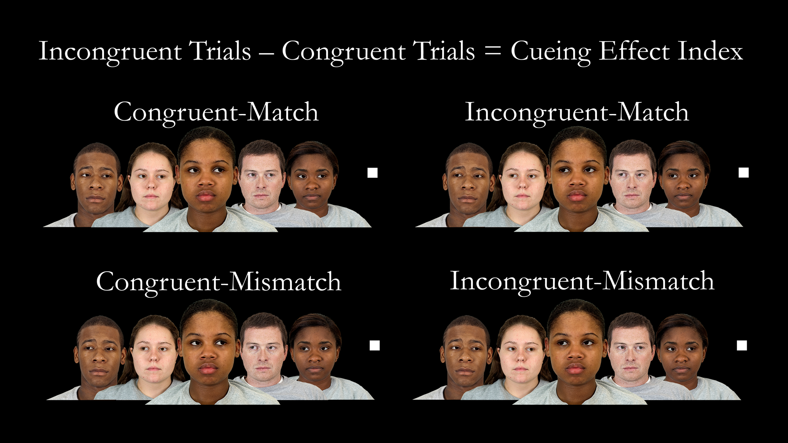 |
Lo, R. F., Ng, A. H., Cohen, A. S., & Sasaki, J. Y. (2021). Does self-construal shape automatic social attention?. PLsS ONE, 16, 1-17. [pdf], [Materials, data, and analyses], [Study 2 Preregistration] |
| 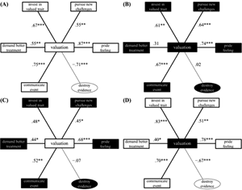 |
Sznycer, D. & Cohen, A. S. (2021). How pride works. Evolutionary Human Sciences, 3, 1-16. [pdf], [Preregistration], [materials, data, and analyses] |
| 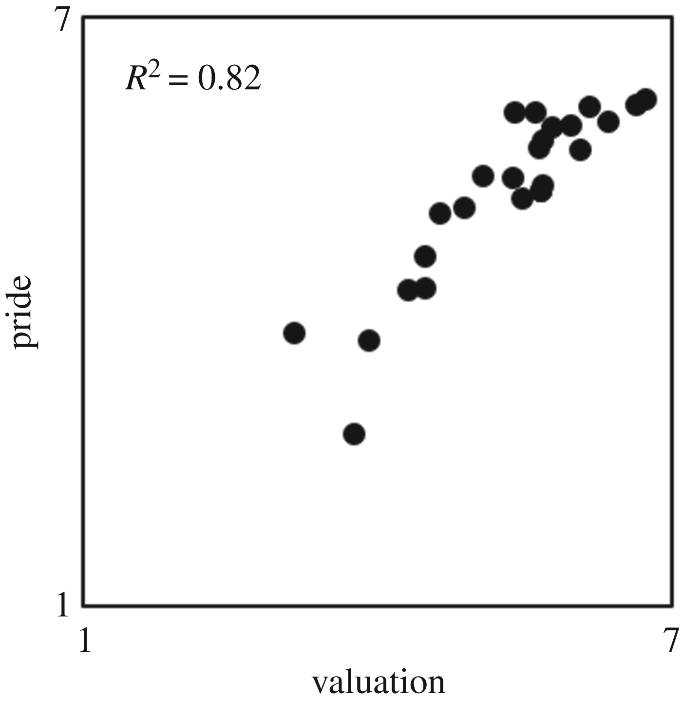 |
Cohen, A. S., Chun, R., & Sznycer, D. (2020). Do pride and shame track the evaluative psychology of audiences? Preregistered replications of Sznycer et al.(2016, 2017). Royal Society Open Science, 7, 1-12. [pdf], [Preregistration, materials, data, and analyses] |
| 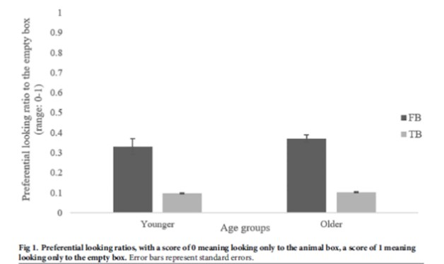 |
Cho, I. & Cohen, A.S. (2019). Explaining age-related decline in theory of mind: Evidence for intact competence but compromised executive function. PLoS ONE, 14(9), 1-10. [pdf], [Preregistration, materials, data, and analyses] |
| 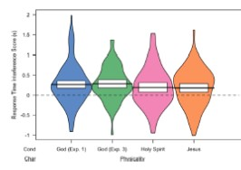 |
Barlev, M., Mermelstein, S., Cohen, A.S., & German, T.C. (2019). The Embodied God: Core Intuitions About Person Physicality Coexist and Interfere With Acquired Christian Beliefs About God, the Holy Spirit, and Jesus. Cognitive Science, 43, 1-23. [pdf], [Materials, data, and analyses], [Preregistration for Experiment 2], [Supplementary Information] |
| 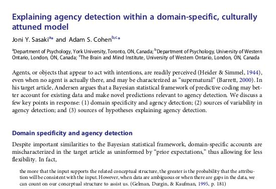 |
Sasaki, J.Y. & Cohen, A.S. (2019). Explaining agency detection within a domain-specific, culturally attuned model. Religion, Brain, & Behavior, 9, 94-96. [pdf], [target article] |
| 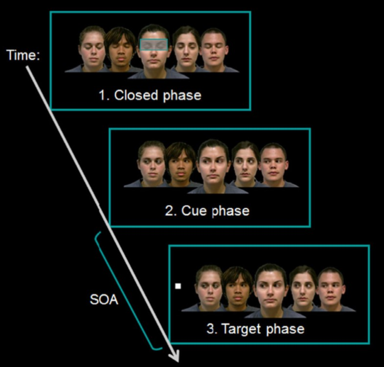 |
Cohen, A.S., Sasaki, J.Y., German, T.C., & Kim, H.S. (2017). Automatic mechanisms for social attention are culturally penetrable. Cognitive Science, 41, 242-258. [pdf], [Materials, data, and analyses] |
| 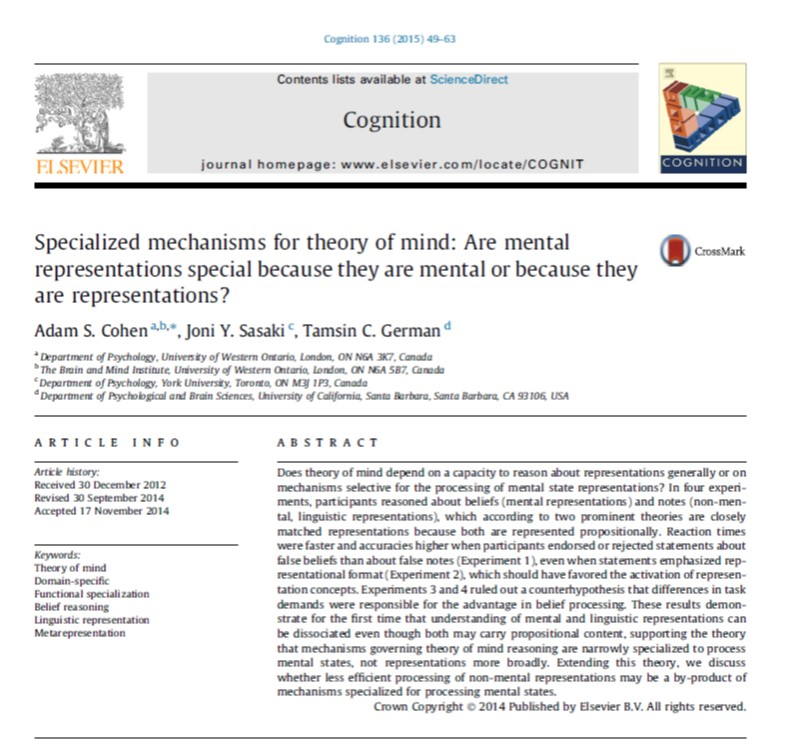 |
Cohen, A.S., Sasaki, J.Y., & German, T.C. (2015). Specialized mechanisms for theory of mind: Are mental representations special because they are mental or because they are representations? Cognition, 136, 49-63. [pdf], [Materials, data, and analyses] |
| 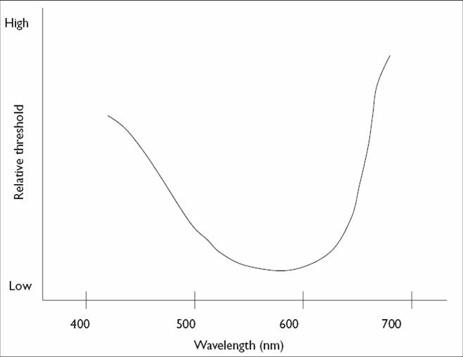 |
German, T.C. & Cohen, A.S. (2012). A cue-based approach to 'theory of mind': Re-examining the notion of automaticity. British Journal of Developmental Psychology, 30, 45-58. [pdf], [Materials, data, and analyses] |
| 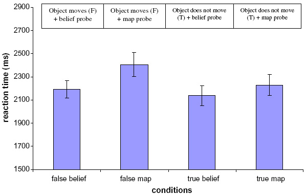 |
Cohen, A.S. & German, T.C. (2010). Reaction time advantages for calculating beliefs over public representations signal domain specificity for 'theory of mind'. Cognition, 115, 417-425. [pdf], [Materials, data, and analyses] |
| 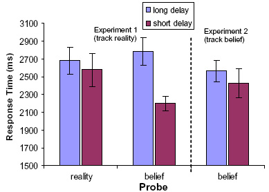 |
Cohen, A.S. & German, T.C. (2009). Encoding of others' beliefs without overt instruction. Cognition, 111, 356-363. [pdf], [Materials, data, and analyses] |
| 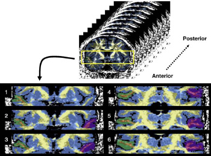 | Lee, K., Yoshida, T., Kubicki, M., Bouix, S., Westin, C., Kindlmann, G., Niznikiewicz, M., Cohen, A., McCarley, R.W., & Shenton, M.E. (2009). Increased diffusivity in superior temporal gyrus in patients with schizophrenia: A diffusion tensor imaging study. Schizophrenia Research, 108, 33-40. [pdf] |
| 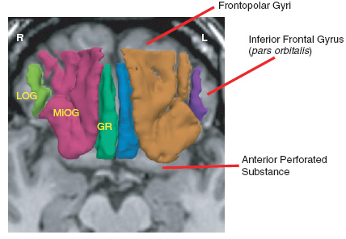 | Nakamura, M., Nestor, P.G., Levitt, J.J., Cohen, A.S., Kawashima, T., Shenton, M.E., McCarley, R.W. (2008). Orbitofrontal volume deficit in schizophrenia and thought disorder. Brain, 131, 180-195. [pdf] |
| 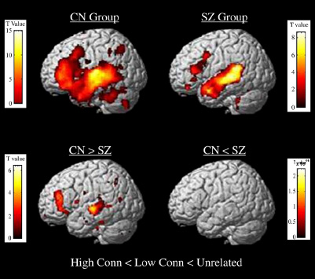 | Han, S.D., Nestor, P.G., Hale-Spencer, M., Cohen, A.S., Niznikiewicz, M., McCarley, R.W., & Wible, C.G. (2007). Functional imaging of word priming in males with chronic schizophrenia. Neuroimage, 35, 273-282. [pdf] |
| 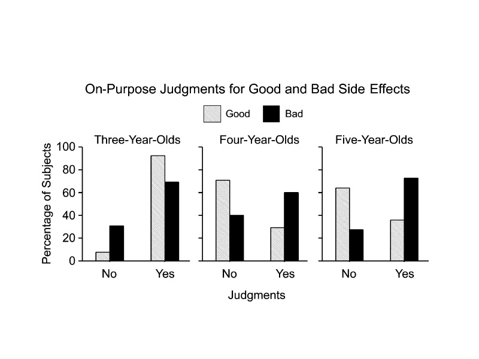 | Leslie, A.M., Knobe, J., & Cohen, A. (2006). Acting intentionally and the side-effect effect: 'Theory of mind' and moral judgment. Psychological Science, 17, 421-427. [pdf] |